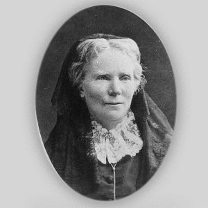
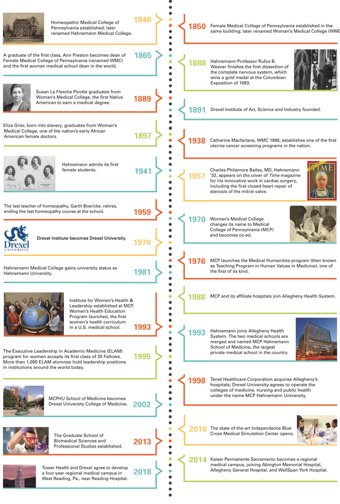

About Me
Ever since I was little I've always been interested into the medcal field and being able to help people, and by having my uncle be apart of it as a anesthesiologist sparked my interests more. Just the thought of usuing new and advancing technolodgy to help solve life changing isssues within the human body facinated me! Now that I've been maturing I have been able to reaserch inspiring women within the medical field that have made their presence. One life changing woman that has inspired me the most, would be the legend herself Elizabeth Blackwell!
Who is Elizabeth?

In 1849, "Elizabeth Blackwell" became the first woman in the United States to be granted an MD degree. Blackwell began her pioneering journer after a deathly ill friend insisted she would have recieved better care from a female doctor. Now officially called Dr. Elizabeth Blackwell, paved the path for innumerable women in the new and changing medical field to follow.
Medical History Throughout Time
